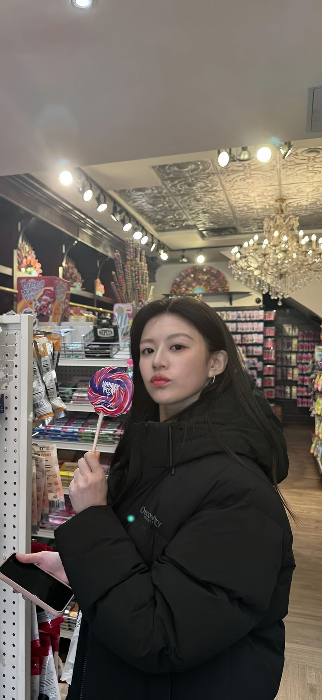

Masalah: Belum memiliki tempat untuk menampilkan informasi diri, pengalaman, dan kemampuan secara terstruktur
Solusi: Membuat website portofolio pribadi yang menampilkan profil, project, skills, pengalaman organisasi, dan informasi kontak
Berperan dalam membantu ketua OSIS serta ikut mengoordinasikan kegiatan dan program kerja OSIS di sekolah.
Saya adalah seorang pelajar yang suka mencoba berbagai hal baru dan menikmati proses dalam belajar. Saya senang mengembangkan kemampuan, mendapatkan pengalaman baru, dan mengenal banyak hal yang belum pernah saya coba sebelumnya. Saya percaya bahwa setiap pengalaman dapat menjadi kesempatan untuk belajar dan menjadi pribadi yang lebih baik.